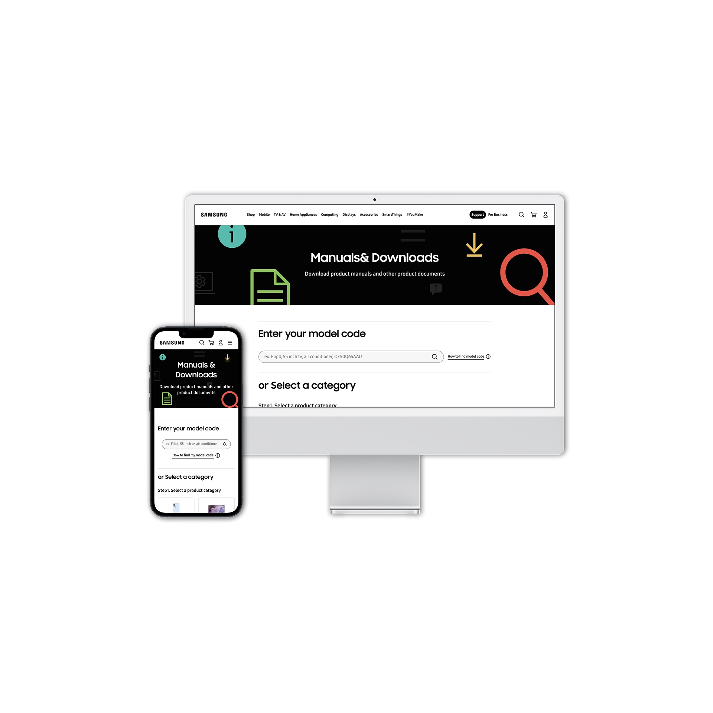
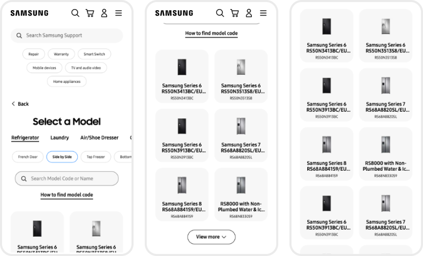
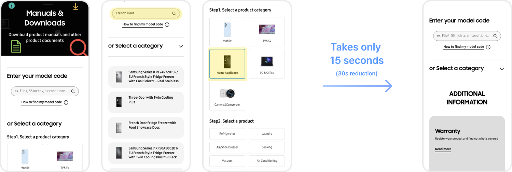
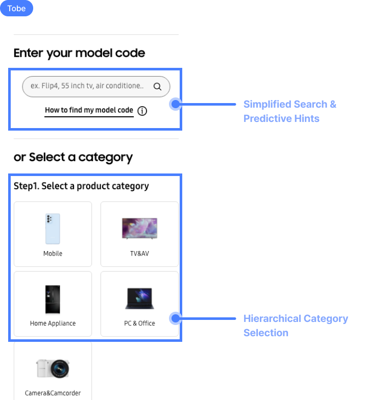
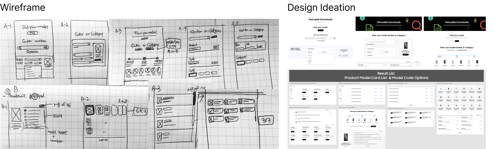
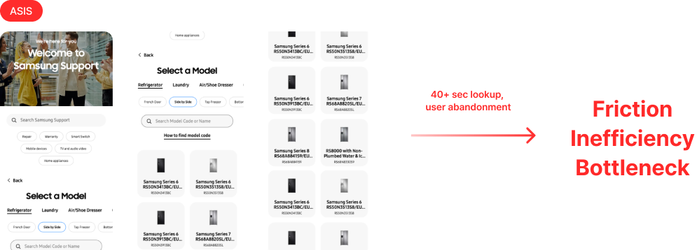
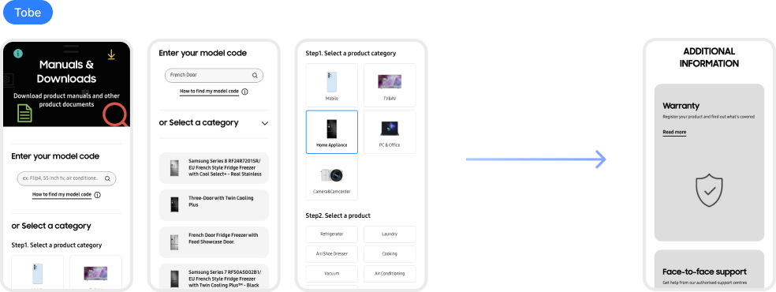

확인을 먼저 보여주는 정보 설계로 · 수백만 Samsung.com 사용자의 태스크 완료 시간이 62% 빨라졌고 · CSAT은 33% 올랐다.

Samsung.com의 Manuals & Downloads 페이지는 전 세계 수백만 사용자가 쓴다 · 브랜드 충성도가 유지되거나 · 깨지는 · 구매 후 접점이다. 규모가 크다 보니 깨지는 쪽이었다.
대부분 사용자가 자가 해결을 포기하고 상담으로 넘어갔다. 조회 실패 하나하나가 상담 접촉으로 이어졌고 · 이게 상담 부담 · 이탈 위험 · 브랜드 신뢰 약화로 쌓였다. 하필 장기 충성도가 결정되는 순간에.
전담 UX Research 팀이 이탈을 만드는 구조적 어긋남을 밝혀냈다. 나는 이 팀과 협업해서 · 리서치 결과를 디자인 결정으로 옮겼다.
시스템은 매뉴얼을 찾으려면 product code(예: SM-F721BLBGEUB)를 요구했다. 사용자는 기껏해야 product name을 알고 왔다 · 많은 경우 category name만 알고 왔다. 실제 문제는 사용자가 쓰는 단어와 시스템 구조 사이의 간극이었다.
이 차이는 제품 라인별로 더 깊게 갈라졌다. 모바일 사용자는 보통 product name("Flip4", "A53")을 알고 와서 바로 검색할 수 있었다. TV · 가전 사용자는 category name("Smart TV", "fridge")만 알고 오는 경우가 많았다. 기존 UI는 단계별로 안내하는 선택 경로를 제공하지 못했다. 두 집단 다 실패했지만 · 실패 이유는 구조적으로 달랐다. 네 가지 반복 실패 패턴이 이 간극에 맞물렸다 ·
"Each one looks almost the same · I can't tell which is mine."
User research · Manuals & Downloads
AS-IS 기존 Search Samsung Support 화면표면적 이야기는 "내비게이션이 고장 났다"였다. 실제 패턴은 달랐다 · 모든 pain point는 한 순간으로 수렴됐다 · 사용자가 자기 제품이 맞는지 확인할 수 없다.
사용자가 필요한 건 더 많은 옵션도 · 더 똑똑한 검색도 아니었다 · 결정하는 순간에 확인이 필요했다. 그 지점에서 인지 부담을 줄이면 · 그 앞이 아니라 · 완료율이 올라갈 것이다.
고려했다가 제외한 대안 · 검색만 고치는 방식(모델명 모르는 사용자를 놓침) · 더 깊은 분류 체계(클릭이 늘어 40초 지표가 더 나빠짐). 해결책은 두 집단을 동시에 커버해야 했다.
하나의 리디자인 · 세 가지 UI 패턴이 나란히 돌아간다. 각 패턴은 리서치에서 드러난 실패 모드 하나씩을 겨냥했다.
사용자가 product name을 입력하면 · autocomplete이 맞는 모델을 이미지와 함께 보여준다 · 자기 제품을 아는 사용자의 시행착오를 줄인다.
카테고리 분류를 새로 짜서 · 단계마다 확실히 좁혀지게 했다 · Samsung의 전체 글로벌 카탈로그에 제품 라인별 커스터마이징 없이 적용 가능하다.
선택하는 순간에 제품 이미지를 보여준다 · 사용자가 결정하기 전에 "이게 내 거야"를 확인시킨다 · 거의 똑같은 모델 간 구분을 결정 시점에서 해결한다.
가능한 곳에서 기존 컴포넌트를 재사용했다 · 새 인터랙션 패턴을 도입하면서도 구현 일관성을 유지하고 개발 부담을 최소화했다.
협업 · UX Research 팀과 디스커버리 · 검증을 함께 했고 · Zeplin으로 엔지니어링에 최종 스펙을 넘겼다 · 인터랙션 상태 주석과 Samsung Design System 컴포넌트 매핑을 포함해서.

TO-BE · Full Flow Manuals & Downloads → Enter model code → Select category → Step 2 select product → Additional Information
Pattern 01 · 02 Simplified Search & Predictive Hints · Hierarchical Category Selection
Process · Wireframes 초기 아이디어 · 핸드드로잉 와이어프레임런칭 후 · 실제 기준 대비 측정.

Before 마찰 · 비효율 · 병목
After 리디자인된 흐름 · 25초 단축 · 자가 해결런칭 후 정성 피드백은 · 자신감 상승의 주된 동력을 시각적 확인으로 꼽았다. 사용자들은 마찰이 덜해졌고 · 맞는 제품을 골랐다는 확신이 커졌다고 말했다.
리서치가 드러낸 건 검색 의도가 아니라 · 정체성 혼란이었다.
문제를 내비게이션 실패가 아니라 · 확인의 순간으로 다시 정의한 것이 · 디자인 방향을 바꿨다.
작은 디자인 결정들 · 시각적 위계 · 즉각적 확인 신호 · 이게 맞는 순간에 닿을 때 측정 가능한 비즈니스 결과로 쌓인다. 진짜 힘이 되는 건 내비게이션을 재구조화하는 게 아니었다. 사용자가 이탈하던 바로 그 지점에 확인 신호를 끼워 넣는 것이었다.
사용자의 진짜 문제가 탐색이 아니라 · 정체성 확인일 때 · 확인-우선 디자인이 내비게이션-우선 디자인보다 낫다.
솔직한 한계 · 검증은 런칭 후 행동 데이터로 이뤄졌다 · 실제 사용자 대상 사전 유저빌리티 테스트가 아니었다. 일부 디자인 결정은 배포 전에 리스크를 완전히 제거하지 못했다.
다음 이터레이션은 · 구현 전에 모더레이트 유저빌리티 세션으로 분류 체계를 먼저 검증하고 · 재방문 사용자의 선택 시간을 0에 가깝게 줄이기 위해 능동적 모델 감지(시리얼 번호 · 구매 이력 기반)를 얹을 것이다.